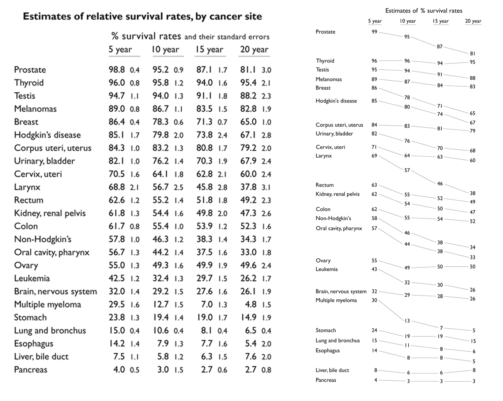
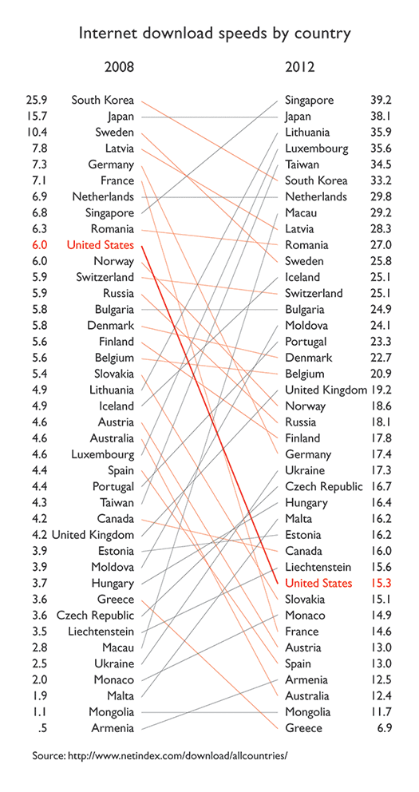

NYC Metro Population Maps
Where in the region was growth concentrated?
Between 2000 and 2010, the region's population change was concentrated in the region's core, as well as in in outer counties such as Suffolk in NY, New Haven in CT, and Ocean and Middlesex counties in NJ. Only Essex county saw a decrease in its share of population, while outer regions captured a small percentage of the population growth of the entire region.

A similar map, produced in 1914, measuring population change in different states, more closely resembles Tufte's approach to slopegraphs.
Unlike the 1883 map, this map from Willard Cope Brinton's Graphic Methods for Presenting Facts maintain's Tufte's approach to the first and last column's hierarchy.
Both the left-most and right-most columns rank the states by their population, which allows for a clearer horizontal analysis of the change of population through time.

Types of Data
As slope graphs track changes over time and ranks items hierarchically, the order of values of the data must be known.
Given this, data represented in slope graphs can only be scales of ordinal, interval, or ratios, and the data must be collected over a period of time.
Take another of Tuske's graph's as an example.
On the left, the percent of survival rates by cancer site is represented numerically. The leftmost column ranks the data from highest at the top, to lowest at the bottom.
On the right, the data is translated into a slope graph; here, the data is represented in a way that visually illustrates changes in values.
It is easy to distinguish which types of cancer decreased in survival rates over time, and by how much.
As other types of data (nominal, for example), do not reveal any specific structure or order, these cannot be adequately represented using slope graphs.

Examples
Behold, more examples of slope graphs, and what they bring to the slope graph table.
In the example below, describing the internet download speeds by country, positive and negative slopes are distinguished by color.
Line weight of slopes can be used to call out specific elements, as is used in this case to highlight the (sadly) slow and decreasing download speeds in the United States.

The next example uses color to distinguish positive and negative slopes, and also uses line weight of the slopes in order to distinguish further visual order.
The line weights in this graph help the reader see hierarchy, and better connects the left column's order to that on the right.
However, unlike typical slope graphs, this graph does not have the same unit of analysis on both the right and the left.
On one side, it displays the win/loss ratio, while on the other, it shows the annual budget of each team, ranked.
So does this mean that slope graphs do not necessarily need to have the same unit of analysis on both sides in order to be considered slope graphs?
It could be said that these graphs are a type of slope graphs. And these graphs can be helpful in many ways. Take the graph below as an example.
In this slope graph from windingroads.com, which compares the speed for cost of different vehicles, each column represents a different variable, however, the reason for this is that each variable is used in a mathematical equation in order to determine the best speed for value of all the vehicles.
The columns are ranked (highest to lowest or vice versa depending on what is most valued for each variable), as in a typical slope graph.
The relationship between the different variables through the use of the equation reveals that not all variables must have the same weight, as can be extrapolated from the regular slope graph where on each end the variables are the same and are ranked similarly.
As this graph reveals, the vehicle with the highest horsepower is not necessarily the car with the highest speed for its value.
How to Build a Slope Chart
Although these graphs look simple, slope graphs are not necessarily easy to make. A lot of the examples above were drawn by hand, or were created using software such as illustrator.
Some software tools do exist, such as slopegraphs in R and Tableau.
When doing slope graphs, these type of software create a vertical numerical axis with evenly spaced units, in order to visually create hierarchy.
These type of programs also detect overlapping labels that otherwise make the chart hard to read.
The same goes for charts created by hand; when making these charts on illustrator, for example, it is important that the vertical axes have a consistent numerical order, that the elements are ordered hierarchically in both columns, that the labels of each element are clear and easy to read, and that the the slopes connecting both columns are relative and consistent with all others, for comparison.
Pros and Cons of Slope Charts
We've covered some of the great things about slope graphs: they are easy to read, they allow us to see relative change over time, to identify outliers, general trends, and relationships between variables. But what about the cons?
Slope graphs, in their simplicity, obscure other parts of the data. For example, if we think of each line as representing a linear equation, then the graph only represents the slope of the equation. The graph does not allow for interpretation of correlations, nor does it reveal any constants affecting each slope.
It also negates representation of standard errors, which, if represented, would be hard to visualize when the slope graph allows for slopes themselves to become very large (whenever there are extreme outliers), in which case, logarithms of the variables (whenever possible) can be used.
But hey, one type of chart cannot do everything. That's why there are a million types of charts.
Take me back home...